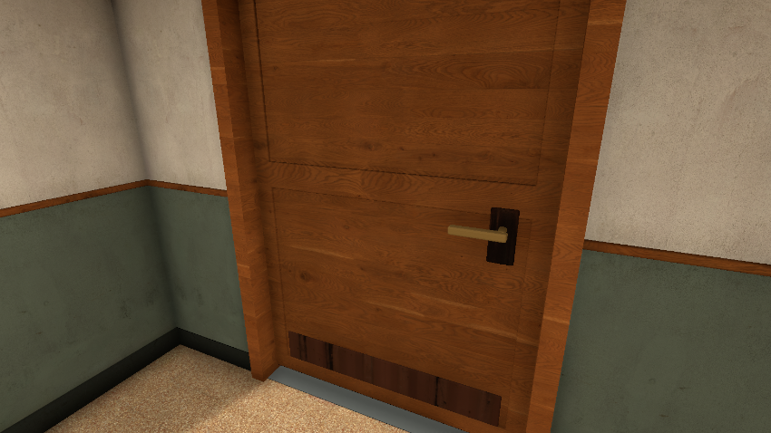
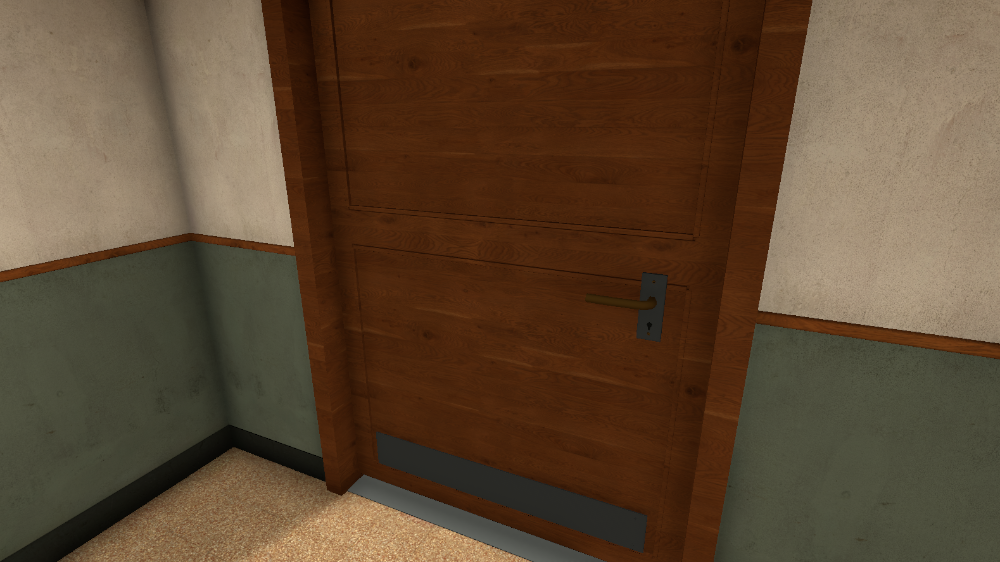
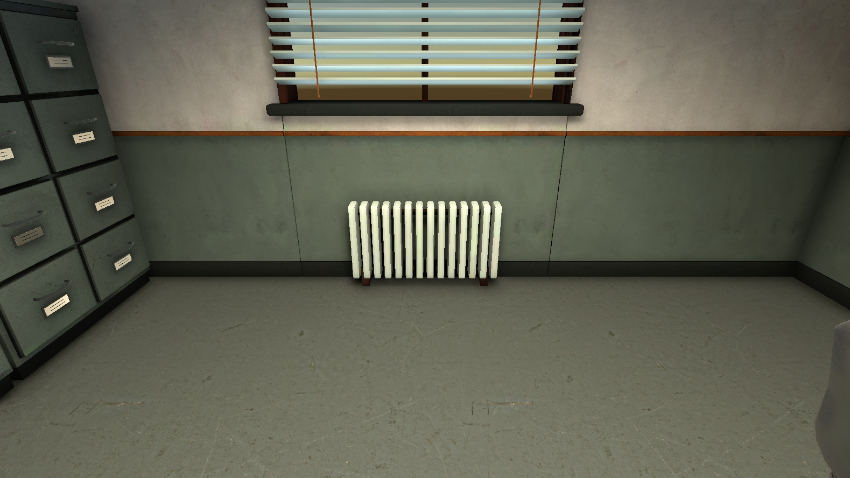
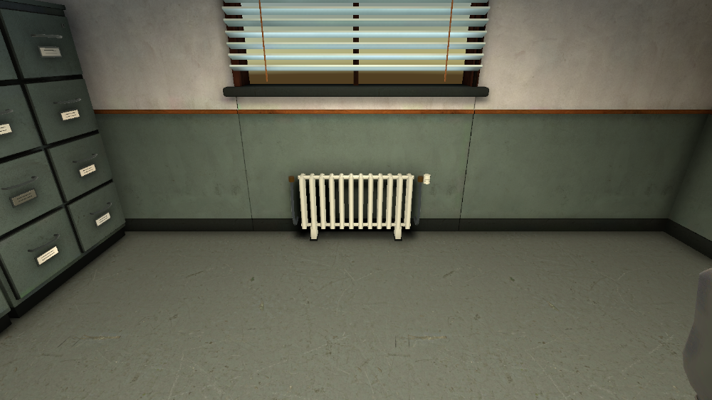
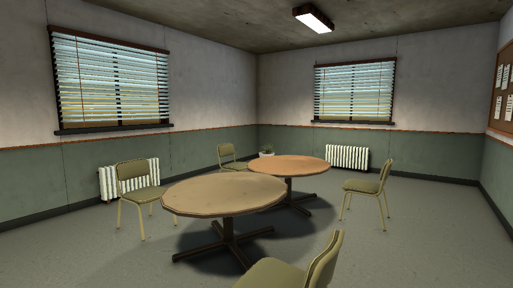
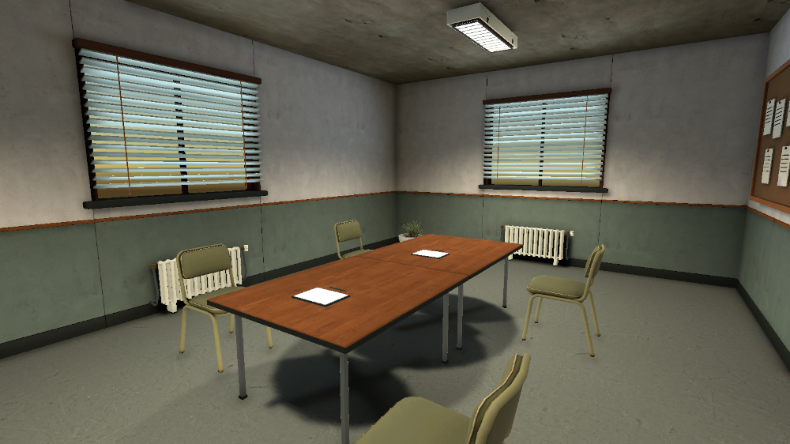
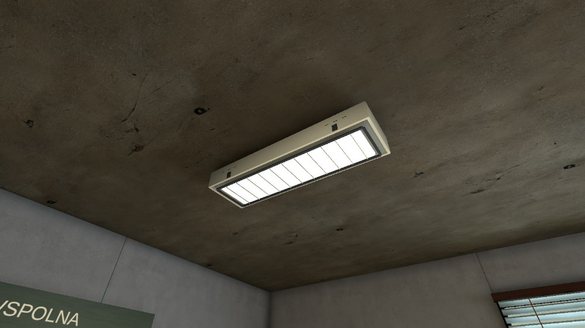

Station fixture polish
New doors, radiators, ceiling details and briefing tables. No lighting bake; previews use the existing lighting.
Door construction and hardware

Before
AfterRadiator

Before
AfterBriefing furniture

Before
AfterCeiling fixture details

Change and verification report